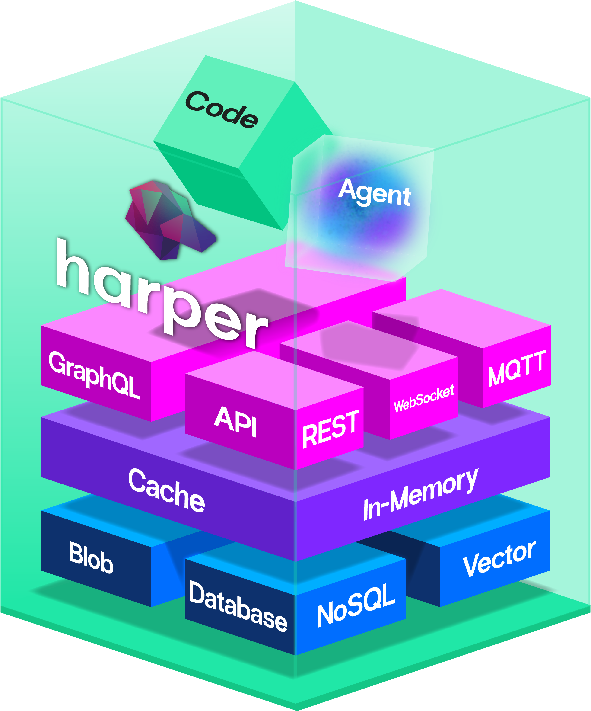

Performant, Parallelizable, Framework Agnostic Node.js Integration Testing
Ethan Arrowood
Testing is hard
"It works on my machine."
"That test's just flaky, re-run it."
"You can't run those locally."
"It only runs in CI."
"Don't touch it! It's finally green."
What am I testing?

github.com/HarperFast/harper (Apache 2.0)
Define "integration"
Unit
A single unit of code; everything else mocked/stubbed.
too littleIntegration
The complete application. No hooking into internals.
just rightEnd-to-end
The full production stack. Like end users experience.
too muchApplication is a black box
- Requests & operations
- Config, env, CLI flags
- stdin & signals
- Responses & status
- Logs, stdout/stderr
- Files & exit codes
No mocking, no stubbing, no reaching inside. Assert on behavior, never on implementation.
Application = Process
Integration testing an application means managing the lifecycle of the application process
Manage the lifecycle
- Start it
- Wait for it to be ready
- Restart it
- Stop it
- Clean up
Interact with the process
- Send signals to it
- Write to stdin
- Stream and read stdout and stderr
- Read and process log files
- Monitor crashes
Harper is an application platform
Harper can run all sorts of applications
- Web apps: Vite, React, Astro
- Backend APIs: REST, MQTT, GraphQL, MCP
- Data stores: Blob, LMDB, RocksDB
- Multi-instance replication
- GPU access for LLMs
How do we…
isolate each test in its own process?
make the suite run everywhere?
test every kind of application?
do it all performantly?
Early decision: use node:test test runner API
- One less dependency to manage
- Simple concurrency model to architect around
- Dogfood the new API
- Still planning to build agnostic API to work with other runners
When running multiple complex processes
how much parallelism is actually possible?
Measuring instead of guessing
node:test "concurrency" is overloaded
Test runner concurrency = file-level process parallelism
node --test \
--test-concurrency=5 \
"*.test.js"node:test "concurrency" is overloaded
Test suite concurrency = in-process async concurrency
suite('x', { concurrency: true }, () => {
test('a', async () => { … });
test('b', async () => { … });
});Node's default concurrency is built for cheap tests
node --test --test-concurrencyos.availableParallelism() // 12 on my laptopIf each test process spawns an application process, we realistically only have half the available parallelism.
But computers are really good at doing multiple things at once.
The experiment
- 20 generated test files, each starting an application process
- Concurrency 1 → 12 (sequential to max parallelism)
- 25 samples per level, on a normal developer laptop
https://github.com/ethan-arrowood/node-test-runner-parallelization-analysis
Work per file
Work per file randomized within a mode:
- 0-100 MB file I/O
- 0-3 processes
- 0-4 worker threads
The gain plateaus, then reverses
Total median suite duration (shorter is faster)
Past the plateau, variance more than doubles
20 test files · 25 samples per level · concurrency 1–12 · duration in ms
| Concurrency | Median | Std dev | p95 | Worst run |
|---|---|---|---|---|
| 7 | 3,468 | 294 | 3,990 | 4,520 |
| 10 | 3,534 | 654 | 5,339 | 5,466 |
| 11 | 3,724 | 690 | 5,096 | 5,717 |
Std dev jumps from 294 at the optimum to 654 and 690 just past it
The run-to-run spread more than doubles.
The real developer experience is in the tail
20 test files · 25 samples per level · concurrency 1–12 · duration in ms
| Concurrency | Median | Std dev | p95 | Worst run |
|---|---|---|---|---|
| 4 | 3,904 | 368 | 4,648 | 5,238 |
| 10 | 3,534 | 654 | 5,339 | 5,466 |
p95 at concurrency 10 (5,339) is worse than a typical run at 4 (3,904)
2.5× the processes for worse overall performance.
Calculated default
When each test spawns its own application process, the ideal concurrency is
half the available parallelism, plus one
concurrency = floor(availableParallelism / 2) + 1
= floor(12 / 2) + 1
= 7 // the measured optimumThis might not be perfect, but its a better starting point than max parallelism, and remains configurable
2. Networking contention
Everything wants port 9925
Dynamic ports would mean core changes
The easy fix: let the OS hand out a free port.
server.listen(0, () => {
const { port } = server.address(); // the OS picked a free one
});But two problems:
- The app has to report back which ports it received
- Harper currently requires ports to be configured
How can we solve this without modifying core?
Not a real fix: get-port
// what get-port does, roughly:
async function getPort() {
const server = net.createServer();
await listen(server, 0); // OS assigns a free port
const { port } = server.address();
await close(server); // ← the port is released here
return port;
}
const port = await getPort();
const harper = await createHarper(port); // ← nothing reserved it in betweenBetween the release and the reuse, the OS can hand that port to any other process — especially with many test processes racing at once.
If we can't reliably reserve the ports…
what about the address?
Introducing loopback addresses
All of 127.0.0.0/8 (127.0.0.1 through 127.255.255.255) loops back to localhost
// every instance keeps its default ports
test/application 1 → http://127.0.0.2:9925
test/application 2 → http://127.0.0.3:9925
test/application 3 → http://127.0.0.4:9925- Every instance can use port 9925 without conflict
- Isolation is by address
One caveat: macOS needs setup
| Platform | 127.0.0.1 | 127.0.0.2-127.255.255.255 |
|---|---|---|
| Linux (Ubuntu) | Enabled by default | Enabled by default |
| macOS | Enabled by default | Must be added per address |
| Windows | Enabled by default | Enabled by default |
macOS: register each address
# once per boot, or install the provided launchd daemon
npx harper-integration-test-setup-loopback
# what it runs for each address in the pool
sudo ifconfig lo0 alias 127.0.0.2 netmask 255.255.255.255 upEvery alias claims the same network
No explicit netmask? macOS assigns /8.
# address claimed network
127.0.0.2 → 127.0.0.0/8
127.0.0.3 → 127.0.0.0/8
127.0.0.4 → 127.0.0.0/8- Each address conflicts with every other.
- mDNSResponder keeps defending them.
O(n²) work. A storm of announcements.
/32 removes the overlap
255.255.255.255: each alias claims only itself.- Same pool capacity. Same test isolation.
254 aliases. One macOS box. One paired measurement.
| Netmask | mDNSResponder CPU | UDP 5353 packets / 8 s |
|---|---|---|
/8 | ~65% | 85 |
/32 | ~0% | 5 |
How do we manage which process gets which address?
Loopback Address Pool: JSON file with an array of PIDs, shared by every test process.
[42, 43, null, 45, null, null]index 0 → 127.0.0.2 (PID 42) · index 1 → 127.0.0.3 (PID 43) · …
- Index is the address; value is the owning process ID
- First-available allocation; released once its ports are free
Cross-process mutex to avoid conflicts
// 'wx' fails if the file already exists — atomically
const handle = await open(LOCK_PATH, 'wx');
await handle.writeFile(token); // we hold the lock
await handle.close();One of many options (daemon, orchestrator, atomics).
File lock was simplest. Plus a stale-lock timeout for crashed processes.
A slow writer can lose the lock
await writeFile(pendingPath, JSON.stringify(pool));
await assertLockHeld(token); // still ours?
await rename(pendingPath, POOL_PATH); // atomic publishIf a write outlasts the stale timeout, another process takes the lock. The token check stops the old writer from overwriting the new claim.
Crashed tests would leak addresses forever
// signal 0 checks liveness without signalling
try {
process.kill(pid, 0); // alive — leave it allocated
} catch {
loopbackPool[index] = null; // dead — reclaim it
}A Ctrl+C mid-run doesn't break the pool
Crashed runners left Harper running
- Each Harper starts in its own process group
- A shared monitor reaps groups whose runner died
- POSIX only; Windows relies on runner cleanup
Allocated is not the same as usable
// bind to port 0 just to prove the address exists
server.listen(0, loopbackAddress, () => {
server.close(() => resolve(loopbackAddress));
});1. Verify the whole pool at startup (ensure setup script was run)
2. Verify again per allocation to avoid collisions
Then two more checks before an address is handed out.
A dying node can still hold the address
Harper's HTTP workers bind with SO_REUSEPORT. A new node could share 9926 with an old node's lingering workers and split its connections.
// an exclusive bind fails with EADDRINUSE, even beside an SO_REUSEPORT socket
for (const port of [9925, 9926]) {
if (await isPortInUseOnAddress(port, address)) skip(address);
}Some listeners cover every address
A process on 0.0.0.0:9926, like a local Harper, overlaps the whole pool. On macOS and Windows it quietly takes a node's connections.
// an exclusive bind succeeds beside it there, so connect instead
const port = await findAcceptingPort(address, [9925, 9926]);
if (port) throw new ForeignListenerError(address, port);The API is shaping up
// ctx is a general options object
await startHarper(ctx);
// 1. create a temporary install directory
// 2. allocate a loopback address from the pool
// 3. spawn Harper, wait until it is actually ready
// 4. populate ctx.harperctx.harper
interface HarperContext {
httpURL: string; // 'http://127.0.0.3:9926'
operationsAPIURL: string; // 'http://127.0.0.3:9925'
hostname: string; // '127.0.0.3'
dataRootDir: string; // '/tmp/harper-integration-test-Xk3pQz'
admin: { username: string; password: string };
process: ChildProcess;
logDir?: string;
startupOutput?: { stdout: string; stderr: string };
}teardownHarper(ctx)
await teardownHarper(ctx);
// 1. stop Harper's whole process group
// 2. wait for its ports to be free
// 3. release the address, remove the directory
// (if a port stays held, keep both)3. Framework agnostic
The API imports nothing from a test runner
startHarper(ctx, options?)
setupHarperWithFixture(ctx, fixturePath, options?)
killHarper(ctx)
teardownHarper(ctx)
createHarperContext(name?) // for non-node:test frameworksctx is any object with an optional name and a harper property to write to.
Deliberately loose, so a node:test context and a plain object both satisfy it.
Keep it flexible
// src/run.ts:
// Important! This script should not be required
// to execute integration tests.https://github.com/HarperFast/integration-testing/blob/main/src/run.ts
The convenience runner (configures a smarter concurrency default) holds no state.
Every test file still runs under plain node --test, and parallelization still works.
Two runners, same lifecycle
node:test - file per process
suite('install', (ctx: ContextWithHarper) => {
before(async () => {
await startHarper(ctx);
});
after(async () => {
await teardownHarper(ctx);
});
test('serves', async () => {
const res = await fetch(ctx.harper.httpURL);
strictEqual(res.status, 200);
});
});Two runners, same lifecycle
Playwright - worker-scoped fixture
const test = base.extend<
{}, { harper: HarperContext }
>({
harper: [makeHarperFixture(name),
{ scope: 'worker' }],
});
test('home page renders',
async ({ page, harper }) => {
await page.goto(harper.httpURL);
await expect(page.locator('h1'))
.toHaveText('Next.js v16');
});Playwright integration
export function makeHarperFixture(fixtureName: string) {
return async ({}, use) => {
const ctx = createHarperContext(fixtureName);
const started = await setupHarperWithFixture(ctx, fixturePath, {
harperBinPath: getHarperBinPath(),
startupTimeoutMs: 120_000, // a Next.js build is slow
});
await use(started.harper);
await teardownHarper(started);
};
}https://github.com/HarperFast/nextjs/blob/main/integrationTests/fixture.ts
Discovering core testing values for high quality tests
- Independent: no dependence on order or shared state
- Hermetic: self-contained, no external side effects
- Deterministic: same input, same output
4. Surviving CI
How do you think a M3 Macbook compares to a default GitHub CI runner?
One default runner can't run all the tests
Parallelize across runners: a matrix that shards the suite.
# .github/workflows/integration-tests.yml
strategy:
matrix:
shard: [1, 2, 3, 4]
steps:
- run: node --test --test-shard=${{ matrix.shard }}/4--test-shard=1/3 always runs the same group of tests, on any machine
https://github.com/HarperFast/harper/blob/main/.github/workflows/integration-tests.yml
5. Did it work?
Eleven months of Harper CI data
Before: one long, ordered suite
// integrationTests/apiTests/tests/testSuite.mjs
describe('Main Test Suite', async () => {
await import('./0_envCleanup.mjs');
await import('./1_environmentSetup.mjs');
await import('./2_dataLoad.mjs');
await import('./3_sqlTests.mjs');
// … 23 more, in exactly this order
await import('./26_crlVerification.mjs');
});Inherited from harperdb v4, before the open-source split. Public copy: HarperFast/harper@fb098c0
Every test shared one Harper instance
Each file depends on the state of the previous.
No isolating test failures, no sharding, no parallelism, no running one file on its own.
Most of each run was waiting
And it failed often
of main pushes failed on at least one Node version
Dec 2025 to Jun 2026
Porting it took 3.5 weeks
Kris Zyp, working with coding agents
May 15 to Jun 9, 2026
The port used small, independent files
- 14 PRs, one legacy file or group each
- 17 self-contained files, each with its own Harper
- 19,977 lines of legacy suite and infrastructure deleted
The legacy suite stayed flat. The new one grew.
Legacy suiteFramework tests
Today, one CI run executes
starting 423 Harper instances
Summed suite time vs. the slowest shard
On every platform we support
Node 22, 24, 26, Bun, Windows, and uWS
six shards each
And returns a result in about 12 minutes
median time to a full-matrix result
Cluster tests used to need EC2
- Provision an EC2 instance with Terraform
- Start Docker containers; run Postman over SSH
- Copy the logs back; destroy the instance
Now a cluster fits in one test file
await Promise.all([
startHarper(ctxA, config(hostnameA)),
startHarper(ctxB, config(hostnameB)),
]);
// two nodes, two loopback addresses, one runnerharper-pro cluster tests: 1 to 105 files
Every Next.js version gets its own Harper
Next.js 14, 15, and 16
webpack, Turbopack, ISR, use cache, cluster
Harper PRs run the Next.js suite
runs of the check since Jul 15, 2026
It builds the PR's Harper and tests the adapter against it.
The check flags failures in review
13 of 212 sampled suite runs failed on a Node version
Some may come from Next.js main, not the Harper PR.
More PRs come with integration tests
Merged harper PRs by month, and how many touched integration tests
Touched integration testsOther merged PRs
Bar height: PRs merged that month. Label: share that touched integration tests.
More fixes ship with a test
Fix PRs by month, and how many added or changed an integration test
Shipped an integration testOther fix PRs
Bar height: fix PRs merged that month. Label: share that shipped an integration test.
And CI runs them all the time
Runs of harper's integration test workflow, by month
Before the port finished (Jun 9)After
Adopted across HarperFast
import @harperfast/integration-testing in tests
Heaviest: harper-pro (127 files), harper-reflex (37), oauth (8)
CI is not always green
Main pushes with a failed job, by month. Failure rate, not flake rate.
Last 30 days
- 22% of main runs failed
- Nearly half of those failed only on Windows, Bun, or uWS
- Failures include real regressions, like Node 26
Stability is the next frontier
Each failure points to one test file, its own instances, and its logs.
Thank you
Ethan Arrowood · Head of Open Source Engineering, Harper · ethanarrowood.com
- Framework
- github.com/HarperFast/integration-testing
- Analysis
- github.com/Ethan-Arrowood/node-test-runner-parallelization-analysis
- Next.js
- github.com/HarperFast/nextjs
- Slides
- ethanarrowood.com/talks/performant-parallelizable-framework-agnostic-nodejs-integration-testing/2026-q4/slides
- Post
- ethanarrowood.com/blog/parallel-nodejs-integration-testing
- Data
- ethanarrowood.com/talks/performant-parallelizable-framework-agnostic-nodejs-integration-testing/2026-q4/data